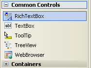
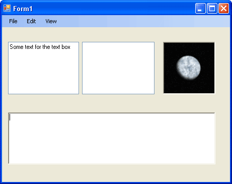
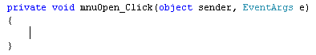

Open a Text File with the Open File Dialogue Box
<< Continues from the previous lesson
We can reuse the Open File dialogue box that we have added. Instead of filtering for images, we'll filter for text files. We'll also add a different kind of text box - the Rich Text Box. This will allow us to easily add the text from the file, straight into the programme.
So return to Designer View, so that you can see your form. Now expand the Toolbox, and locate RichTextBox, under Common Controls:

Double click to add a RichTextBox to your form. You may have to adjust the height and width of your form, and reposition other controls. But your form should look like this, when you've added the RichTextBox:

The RichTextBox is the one at the bottom - it looks exactly the same as a normal text box, but you can do more with it. One Method it does have is called LoadFile( ). We'll use this to load a text file.
Now that we've added the RichTextBox, we can add some code. So, access the code stub for you File > Open menu item. It should look like this:

We can add the same lines as before. So add this to your code:
string Chosen_File = "";
openFD.InitialDirectory = "C:";
openFD.Title = "Open a Text File";
openFD.FileName = "";
The only thing we've changed here is the Title property. For the next line, we can add the Filters:
openFD.Filter = "Text Files|*.txt|Word Documents|*.doc";
The RichTextBox can open plain text files as well as Word documents, so we've added both of these to the Filter property. (It can't handle Word documents very well, though.)
The next thing to do is to display the Open File Dialogue box, so that a file can be selected. Add the following to your code:
if (openFD.ShowDialog() != DialogResult.Cancel)
{
Chosen_File = openFD.FileName;
richTextBox1.LoadFile(Chosen_File, RichTextBoxStreamType.PlainText);
}
This is more or less the same as before. But notice the line that adds the text file to RichTextBox:
richTextBox1.LoadFile(Chosen_File, RichTextBoxStreamType.PlainText);
You'll see a better way to open up a text file later in the course. For now, run your programme and test that it works. You should be able to add plain text file to the RichTextBox.
In the next lesson, you'll see how to add a Save As dialogue box to your C# programmes.